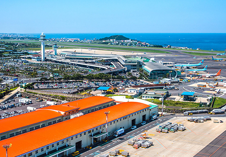
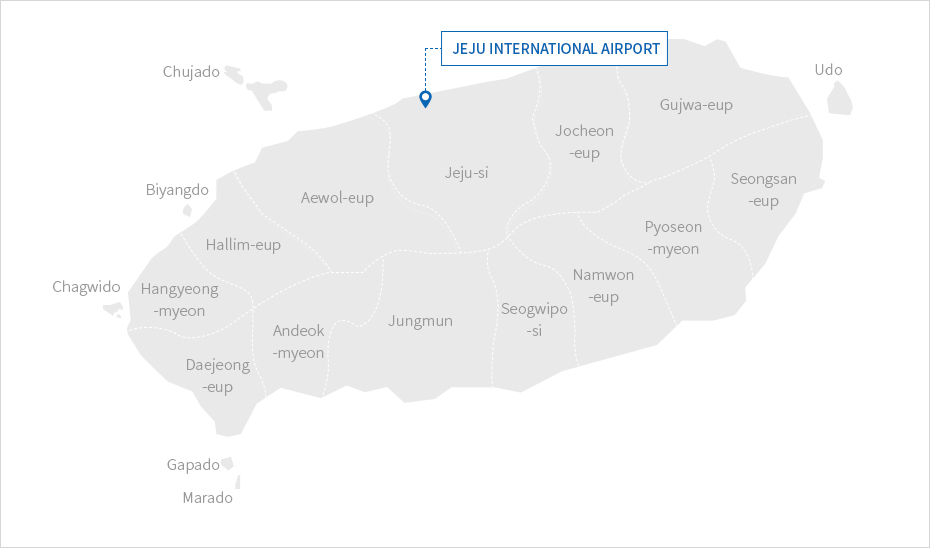
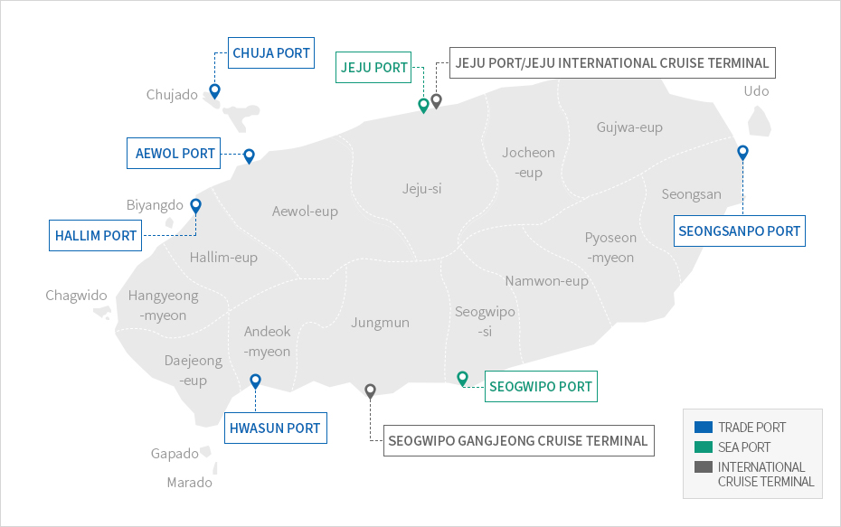
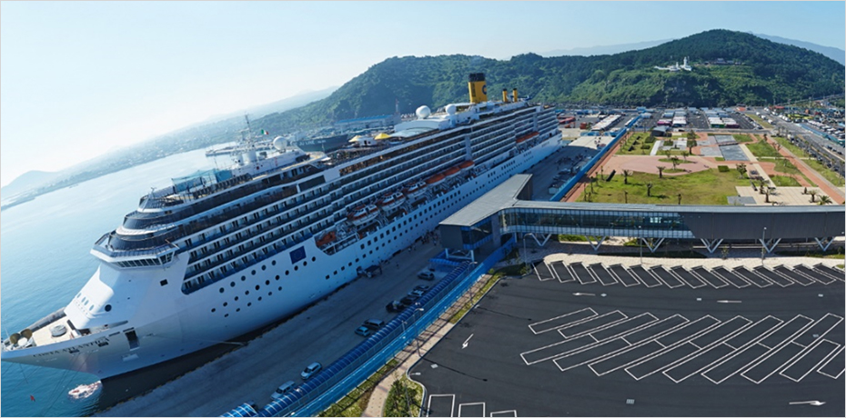
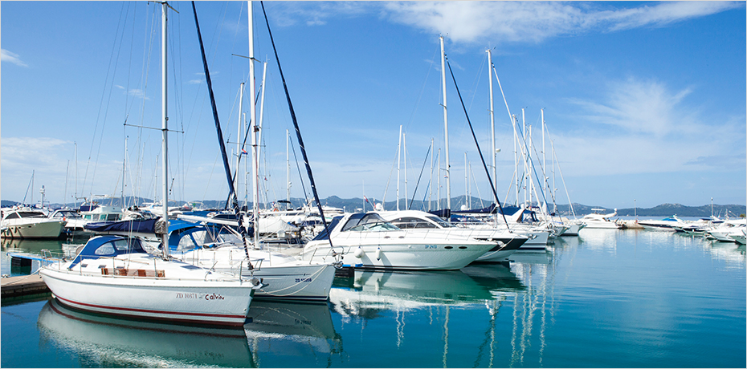

Aviation · Port Infrastructure
- Home
- Investment Environment
- Infrastructure
- Aviation · Port Infrastructure
Jeju International Airport (IATA: CJU, ICAO: RKPC)


Jeju International Airport is Korea’s second busiest airport behind Incheon International Airport, with a capacity of about 30 million passengers every year, providing direct routes to 54 cities in 14 countries.
Located in Jeju City, the airport is home to Jeju Air, Korea’s leading LCC. According to British aviation research and consulting firm OAG, Jeju International Airport is one of the world’s busiest airports.
- Annual air passengers: 29.45 million (as of 2017)
- Annual air cargo volume: 266,370 tons (as of 2017)
- Direct routes to 54 cities in 14 countries (as of 2017)



No.1 Global Busiest Domestic Route Jeju(CJU) – Seoul(GMP)
The busiest by some margin is Jeju (CJU) – Seoul (GMP) with 17 million annual seats, equivalent to around 48,000 on average each day.
Jeju is a popular holiday destination for Koreans and although the flight from Seoul is relatively short, at 243nm (451km), as an island there are fewer other transport options for reaching it.
‘Busiest Routes 2020’ OAG(UK)
Port Facilities
Jeju Island has seven ports with berth facilities for freighters importing and exporting a variety of goods such as agricultural and fishery products, domestic ferries, and international cruise ships, as well as seven marina facilities.
Two trade ports in Jeju City and Seogwipo City, four sea ports around the entire island, and one sea port at Chuja Island (islet of Jeju) are in operation.


2 Trade Ports [Jeju Port, Seogwipo Port] and 5 Sea Ports [Hanlim Port, Aewol Port, Seongsanpo Port, Hwasun Port, Chuja Port]

-
64 berths accessible simultaneously
50 berths for vessels heavier than 1,000 tons
14 berths for vessels heavier than 100 tons -
Maximum Berthing Capacity
Passengers 80,000 DWT
Freight 42,000 DWT -
Annual Volume of Freight Handled
20,263,000 tons
(2019) -
International Cruise ship Handling Performance (2016)
507 times, 1,209,106 passengers

-
Marina Facilities
7 ports, 94 berths